27.07.2022
Heute habe ich das Update im Rahmen meiner 2022er Wikingertour zu Jütland - 7 - Starup - und zu - 9 - Læborg eingestellt. An diesen beiden Örtlichkeiten war ich jeweils am Montag, 30.05.2022, vor Ort.
Ergänzend gibt es zu Starup diese reich bebilderte Abhandlung in dänischer Sprache aus dem Jahr 2016, die aus dem vom Haderslev Museum herausgegebenen Buch "Haderslev En Købstad bliver til - Udravninger ved Starup og Møllestrømmen" stammt: "Anders Hartvig: Udgravningern ved Sdr. Starup Kirke (Kapitel 1 - S. 17-48)".
10.07.2022
Jütland - 37 - Ravnkilde
Zum einen habe ich die Bilder von meiner 2022er Wikingertour eingefügt. Ich war am Donnerstag, 02.06.2022, vor Ort.
Über die Webseite der Königlichen Bibliothek in Kopenhagen findet sich in der dortigen digitalen Sammlung diese Zeichnung vom 07.07.1860. Sie zeigt die Kirche von Ravnkilde mit dem Runenstein links vom Waffenhaus. Sie stammt aus der Sammlung des Apothekers Dr. I. G. Burman Beckers (*(26.04.1802 - 06.10.1880). In dem darunter angebrachten handschriftlichen Text steht u.a. dies: "...Paa Kirkegaarden, i det ene Hiørne, en med Gran beplantet Kiæmpehøi, kaldet Klynges Høi. Ved Vaabenhuset staaer en Runesten, der før laae foran Indganden".
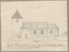
05.07.2022
Jütland - 6 - Hovslund
Im Rahmen meiner 2022er Wikingertour war ich am Montag, 30.05.2022, vor Ort. Dieses Jahr habe ich mich auf Jütland (mit Hjarnø und Samsø) beschränkt. Von daher war dieser Runenstein das erste Objekt auf meiner Liste und damit mein Einstieg in die anstehende knapp 3 ½-wöchige WIKINGER TOUR.

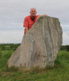
Außerdem habe ich am 10.07.2022 Ergänzungen/Verlinkungen zu den Literaturhinweisen vorgenommen. Ich fand nämlich im Internet u.a. noch den Artikel "Tiedemann, Senius - Hærulfstenen kom hjem for 30 år siden, S. 321-323, Sønderjysk månedsskrift, Nov./Dec. 1981". Darin findet sich ein sw-Foto vom Rücktransport von Berlin. Offenbar wurde der Runenstein dabei in seiner Transportverpackung gerade vom Zug auf einen LKW umgeladen.

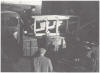
05.07.2022
Jütland - 4 - Stolbro Næs
Im Rahmen meiner 2022er Wikingertour war ich am Samstag, 18.06.2022, vor Ort. Diesmal habe ich insgesamt 30 Steine - 21 auf der Seite zur See hin - 8 auf der gegenüberliegenden Seite - 1 Stein mittig im nördlichen Bereich - gezählt.
Ich habe hier auch Fotos am ausgefahrenen Einhandstativ, das ich in die Höhe gehalten habe, gefertigt (Darüber aus ca. 4 m Höhe fotografiert). Das beste Ergebnis habe ich hier:

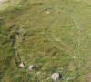
Erstmals habe ich auch nach den Grabhügeln geschaut, die nur schwach erkennbar sind. Die Steine, die sie kreisförmig einfassen, sind schlecht zu erkennen und fotografisch kaum zu sichern, da der Grasbewuchs recht hoch war.
05.07.2022
Jütland - 5 - Dyndved
Im Rahmen meiner 2022er Wikingertour war ich am Samstag, 18.06.2022, vor Ort. Das Schilf um die Schiffssetzungen war glücklicherweise erst vor kurzem gemäht worden. Es hatte sich bewahrheitet: "Alle guten Dinge sind drei!", so dass ich hier endlich was zum sehen bekam.


02.07.2022
Jütland - 81 - Egtved
Im Rahmen meiner 2022er Wikingertour war ich am Samstag, 18.06.2022, vor Ort. Die Kirche ist ausweislich einer Info in der Kirche wirklich täglich von 08.00 bis 16.30 Uhr geöffnet. Auf deren Homepage findet sich dieser Hinweis auch.

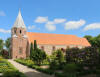

01.07.2022
Jütland - 82 - Sønder Vilstrup
Im Rahmen meiner 2022er Wikingertour war ich am Samstag, 18.06.2022, vor Ort. Zu meiner Überraschung wurde die Allee, die vom Fahrweg neben dem Landerupgård hinunter zum Standort des Runensteins führte, nahezu vollständig abgeholzt (Auf Google Maps 2022 Bildmaterial noch vorhanden).


Aufgrund seiner Lage musste ich den Runenstein erst von etlichen Moosflecken befreien und das Grünzeug davor entfernen, bevor ich ihn fotografierte.

Im Rahmen meiner 2022er Wikingertour war ich am Samstag, 18.06.2022, vor Ort. Aber welche Enttäuschung! Keinerlei Beschilderung mit einem erläuternden Text mehr, dafür nur ein (versteckter) Pfosten mit CR-Code, der über einen Smartphone CR-Code Scanner zu dem "Augustenborg Guiden" führt und in dessen Untermenü man dann zu dieser Seite "https://app.augustenborg.dk/brovold/" kommt. Allerdings war entgegen den dortigen Ausführungen der Bewuchs enorm - siehe diese Bilder. In dem Zustand ist das Objekt (für mich) keinen Besuch mehr wert! Für jemanden der die Örtlichkeit überhaupt nicht kennt, besteht meines Erachtens keine Chance hier was zu entdecken!

26.06.2022
Vom 29.05. bis 22.06.2022 war ich mal wieder in Schleswig-Holstein und DÄNEMARK auf Wikingertour - diesmal neben Haithabu / Danewerk ausschließlich in Jütland (mit Hjarnø und Samsø) - worüber sage und schreibe 4326,40 km per Auto und nochmal 444 km per Fahrrad zusammenkamen!
Mit Ausnahme von Ribe, Malt, Bork Vingehavn und Sebbersund habe ich alle in meiner Jütland Übersicht aufgeführten Örtlichkeiten aufgesucht und alle Objekte - ohne Ausnahme - zu sehen bekommen und fotografieren können! Dazu habe ich in einigen Fällen per E-Mail kurzfristig Kontakt mit den örtlichen Gravern usw. aufgenommen, damit die Kirchen dann auch wirklich offen standen. Dafür möchte ich mich an dieser Stelle noch einmal ausdrücklich bei allen Personen bedanken - Tusind tak!
Es gab auch diesmal zahlreiche Neuerungen usw., die es jetzt nach und nach einzupflegen gilt.
Angefangen habe ich heute mal mit 22 Højstrup Mark und 77 Hjarnø. Aber das ist auch noch die endgültige Version. Es liegt eine Menge Arbeit vor mir!
24.05.2022
Jütland - 71 - Sporup
Zu diesem Runenstein habe ich mir inzwischen den Artikel von John Kousgård Sørensen (*06.12.1925 - 10.01.1999) - Nye vikingetidsnavne - In: Vikingetidens sted- og personnavne. Rapport fra NORNAs 22. symposium i Kobenhavn 14.-16. januar 1993. Red. af Gillian Fellows-Jensen & Bente Holmberg. Uppsala, besorgen können - NORNA-rapporter 54 - 1994 - S. 193 ff. - der sich ausführlich mit dem Beinamen "Svidbalki" auseinandersetzt. Nach dem eingehenden Studium dieser Abhandlung habe ich die daraus gewonnenen Erkenntnisse heute eingepflegt.
26.04.2022
Heute habe ich die Karten aus Google Maps in Jütland komplettiert und sie in den Nummern 61 - 82 ergänzt.
25.04.2022
Inzwischen konnte ich die Karten aus Google Maps in Jütland für die Nummer 51 - 60 einbinden.
22.04.2022
Über diese Webseite kann man die Expeditionsreise des 41-jährigen Dompropst von Viborg, Thomas Frank, die er im Jahr 2021 entlang der russischen Flüsse in Richtung Kaspisches Meer, im Kielwasser der Waräger unternahm, anhand von acht Videos erleben. Für die Expedition wurde ein gestrecktes Rumpfboot aus Espenholz von etwa 5,5 Metern Länge verwendet. Es ist ein aus der Wikingerzeit bekannter Bootstyp, der in diesem Fall Platz für 3-4 Personen bietet. Boote dieses Typs aus Espenholz aus der ersten Hälfte des 10. Jahrhunderts wurden in Staraja Ladoga, Smolensk und Novgorod gefunden. Der Bootstyp selbst ist auch aus Funden in Skandinavien bekannt, darunter Slusegård auf Bornholm. Das verwendete Boot wurde in der Stadt Aristovo bei Nischni Nowgorod und damit im Aufenthaltsgebiet der Skandinavier gefertigt. Es scheint dort eine ununterbrochene Schiffbautradition seit der Wikingerzeit zu geben. Die Expedition beginnt bei der 1200 Jahre alten Siedlung Staraja Ladoga, die zu Wikingerzeiten den altnordischen Namen Aldeigjuborg trug und am Fluss Volkov liegt. Von dort aus folgen Sie dem Fluss Volkov nach Norden in den Ladogasee und weiter an der Siedlung Aalaborg vorbei, die zweimal in Sagen erwähnt wird. Aalaborg liegt am Fluss Sjas.Von Aalaborg folgen die Flüsse Sjas, Tikvinka, Sotinka, Tjagoda, Tjagodosja der Wolga. Von dort folgen Sie der Wolga bis zum Kaspischen Meer, vorbei an den berühmten Siedlungen aus der Wikingerzeit, Jaroslav, Bolgar und Atil sowie Susdal, Uglich und Rostov. Am Kaspischen Meer folgt die Ostseite einem der historisch belegten Nebenflüsse des Flusses Oxus. Folgen Sie von dort dem ausgetrockneten Oxus-Auslass bis zum Handelsposten in Chiwa und weiter nach Buchara und Balkh im heutigen Afghanistan.
Dieser Reisebericht wird im Zusammenhang mit der aktuellen Ausstellung (bis 11. 09.2022) im Moesgaard Muyeum "RUS - Vikinger i øst" über deren Webseite wiedergegeben.
19.04.2022
Die dänische Runendatenbank ist seit Wochen nicht mehr zu errreichen. Auf Nachfrage bekam ich zur Antwort, das auf den Servern, auf denen die Datenbank liegt "verdächtige Aktivitäten" vorlagen. Es ist offenbar kein einfaches Unterfangen. Inzwischen wird aber wenigstes ein Hinweis angezeigt, was anfänglich nicht der Fall war.
Nachtrag 29.07.2022 - Bei Aufruf der Seite wird nun dies angezeigt (übersetzt): Der Server ist leider wegen notwendiger Sicherheitsupdates außer Betrieb und die Seite wird voraussichtlich erst im August oder September wieder online sein.
10.04.2022
Nun kam mir auch noch die Idee zu jeder Örtlichkeit eine Karte aus Google Maps einzubinden. Hätte ich auch schon mal früher drauf kommen können! Angefangen mit Jütland habe ich das in der Liste bei den Nummer 3 - 50 schon mal umsetzen können. Wenn dann alles unter Dach und Fach ist, werde ich eine komplette Karte mit allen Örtlichkeiten einbinden. Das wird aber bestimmt noch eine Weile dauern. Dazu muss ich mir aber erst auch ein mal die Umsetzung anschauen, alles Learning by Doing. Vorbild für die Idee war übrigens die Webseite "RUNES - Forschungsprojekt der Akademie der Wissenschaften zu Göttingen".
04.04.2022
Jütland - 12 - Horne
Die letzten Tage hatte ich mal angefangen meine Ordner Jütland ab Nummer 3 Brovold auf Vollständigkeit (Ausdrucke, Bildmaterial usw.) zu prüfen und gegebenenfalls zu ergänzen. Dabei stieß ich schon bei der Nummer 12 Horne auf eine echte Überraschung für mich. Da hatte ich doch drei wichtige dänische Abhandlungen von H. K. Kristensen, von Michael Lerche Nielsen und von Lene B. Frandsen zu diesem Runenstein ausgedruckt und abgeheftet, aber vorher nicht wirklich studiert. Darüber ergaben sich mir bislang völlig unbekannte Aspekte zu der Steinhistorie, deren Ergebnisse ich nun eingepflegt habe. Es bleibt spannend!
25.03.2022
Jütland - 82 - Sønder Vilstrup
Das Rätsel um das Dokument https://arkiv.dk/vis/2439728
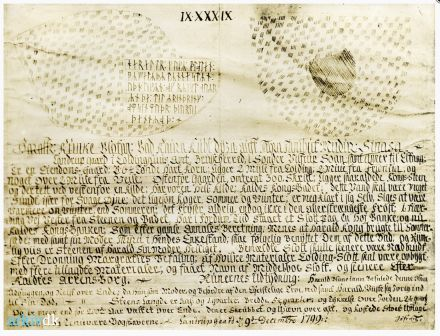
Heute schon ein Jahr rum, aber die Sache lies mir einfach keine Ruhe habe ich mich an Michael Lerche Nielsen - Associate Professor - Department of Nordic Studies and Linguistics - in Kopenhagen- gewandt.
Er hat sich der Sache dankenswerter Weise direkt angenommen und das Rätsel gelöst! :-)
Er hat J.S. Frone als einen Isländer namens Aosmann Isfron identifiziert. Dazu finden sich ausführliche Aufzeichnungen in Danske Præsters Indberetninger til Oldsagskommissionen af 1807, Vest- og Sydjylland, S. 33-35. Auf der S. 34 ist die vom Berichterstatter - Kaplan Garnæs aus Kolding und auch Pfarrer in Alminde - abgezeichnete Runeninschrift abgebildet, die identisch mit der im o.a. Dokument ist, wie man hier sieht:
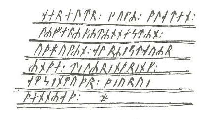
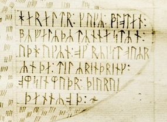
In seinem Bericht vom 24.12.1808 führt Kaplan Garnæs auch aus, dass sich die originalen Aufzeichnungen auf dem Landerupgaard unter Glas gerahmt beim Eigentümer Berthel Ebbesen befanden. Darüber hat er demnach seine Wiedergabe der Runen abgezeichnet. Der Verbleib des Originals ist heute unbekannt. Weiter führt er aus: "Der Runenstein war, als ich 1804 in die Gegend kam, bereits von dem Gutsbesitzer Peder Madsen aus Vilstrup zerkleinert worden, um als Zaun verwendet zu werden!"
Michael Lerche Nielsen kommt bei seinen Recherchen weiter zu diesem Ergebnis:
"Es besteht kein Zweifel, dass Isfron die Inschrift selbst verfasst hat. Isfrons Runenwerke von 1797 (Jelling) und 1799 (Sønder Vilslev / Landerupgård) haben keinen wissenschaftlichen Wert, sind aber natürlich forschungsgeschichtlich interessant. Isfron war ein isländischer Buchdrucker in der Stadt Vejle und er hat auch eine sehr fantasievolle Schrift über die Interpretation der Jelling-Steine hinterlassen, die man auf der Website des Jelling-Projekts nachlesen kann: http://jelling.natmus.dk/om-jelling/tradition-og-historie/aosmann-isfron-1797/
Von Michael Lerche Nielsen wurde auch der Eintrag zu diesem Runenstein in der Dänische Runendatenbank unverzüglich aktualisiert / ergänzt.
Im Ergebnis ist dieses Dokument vom 09. Dezember 1799 also eine Fotografie der verschollenen Original Aufzeichnungen von Isfron, die durch den Uhrmacher und Amateurfotograf Ludvig Thomsen vor 1935 angefertigt wurde. Das Foto fand irgendwann Einzug in das "Kolding Stadsarkiv
".Außerdem habe ich diese Webseite nochmals überarbeitet, weitere Literaturhinweise ergänzt, den umfangreichen, wichtigen Aufsatz von Lis Jacobsen (*29.01.1882 - 18.06.1961, dänische Runologin und Archäologin) in den "Aarbøger for nordisk oldkyndighed og historie - 1913" - Nyfundne Runeindskrifter i Danmark - S. 125-132 aufbereitet usw. - Jetzt sollte aber mal endlich alles verfügbare Material eingepflegt sein.
22.03.2022
Jütland - 81 - Egtved
Der nächste Runenstein in Jütland konnte von mir die letzten beiden Tage überarbeitet werden. Hier war der Zeiteinsatz relativ gering, aber trotzdem konnte die Webseite von den Informationen her deutlich aufgewertet werden.
20.03.2022
Jütland - 79 - Randbøl (St. Rygbjerg)
Die Nummer 78 - Jelling - lass ich zunächst mal aus, weil das sicher extrem zeitintensiv wird. Von daher war die Nummer 79 als nächste Überarbeitung dran, die heute abschließen konnte. Auch hier konnte ich etliche Informationen - nach ausführlichem Quellenstudium - zur Entdeckungsgeschichte und zur Restauration in den 1980er Jahren ergänzen.
16.03.2022
Durch irgendetwas wurde meine Aufmerksamkeit auf den Runenstein von Lolland - 106 - Tillitse - gelenkt. Einmal angefangen, habe ich diese Runensteinseite nochmals total überarbeitet, weil ich nach und nach im Internet auf immer neue Informationen stieß. Darüber wurde es eine sehr umfangreiche Abhandlung mit zahlreichen Links zu digitalisierten Büchern aus längst vergangenen Tagen, vielen bildlichen Darstellungen usw. Ich hatte auch Angaben zur Leserichtung dieses Runensteins und anderes vergessen, was ich nun nachgeholt habe.
Dann kam ich noch irgendwie auf den Runenstein von Jütland - 42 - Hobro und musste feststellen, dass dort etliche Informationen fehlten, was natürlich sofort erledigt wurde. Außerdem habe ich bei der Gelegenheit den Runenstein Hobro 1 eingepflegt, der offenbar bei einem Hausbrand in den 1850er Jahren durch die Hitze gesprengt und dadurch leider völlig zerstört wurde.
Die Tage stieß ich zufällig auch auf eine interessante Nachricht zu Haithabu / Danewerk / Jelling. Die drei Museen zu den Wikinger-Welterbestätten Haithabu und Danewerk sowie Jelling (Dänemark) haben eine enge Kooperation eingeleitet, um den grenzüberschreitenden historischen Zusammenhang der drei Standorte zu verdeutlichen. Der erste gemeinsame Schritt ist eine Marketingkampagne mit Illustrationen des dänischen Comiczeichners Bjørk Matias Friis. Im Mittelpunkt von Harald Blauzahn Handel, Verteidigung und Prahlerei steht der berüchtigte dänische Wikingerkönig, der das Land von ca. 960 bis 985 regierte und später dem Datenübertragungssystem Bluetooth seinen Namen gab. Weiteres könnt ihr über den Link nachlesen.
11.03.2022
Jütland - 77 - Hjarnø
Die letzten Tage habe ich mich mit der kleinen Insel Hjarnø und den dortigen Schiffssetzungen beschäftigt. Überrascht war ich von Informationen, wonach die australische Flinders Universität aus Adelaide Untersuchungen in 2018 vorgenommen hat, um die Frage zu klären, ob jemals soviele Schiffssetzungen vorhanden waren, wie sie die Skizze aus Ole Worms Werk zeigt. Aber auch sonst fand ich zahlreiche mir bislang unbekannte Infos / Quellen / Fotos usw., die ich dann in der überarbeiteten Webseite eingestellt habe. Außerdem habe ich beim Horsens Museum hinsichtlich eines Berichtes zu der im Mai 2009 erfolgten magnetischen Untersuchung durch Tatiana Smekalova nachgefragt, der daraufhin hier ins Netz gestellt wurde.
07.03.2022
Jütland - 20 - Sjørring
Während ich mit dem u.a. Eintrag befasst war, kam ich über weitere Internetrecherchen überrraschend auf weitere zahlreiche Ergänzungen in Form des Digitalisats von "Kong Valdemars Jordebog" aus dem Jahr 1231, diversen historischen Karten, Erkenntnissen zur Nutzung der Anlage als Schützen- und Sportfesten usw. die ich dann auch eingepflegt habe.
03.03.2022
Jütland - 20 - Sjørring
Diese wunderschöne Gouache von Rasmus Henrik Kruse (*07.08.1796 - 30.05.1877, Landschaftsmaler) aus dem Jahr 1838 (Original 8,5 x 15,5 cm) hat sich irgendwo in seinen "Nørre Jyllands Mærkværdigheder i det 19. Aarh. Hs. Bd 1-2 (med) Tillæg 1-2" erhalten, die sich im Nationalmuseum Kopenhagen, Antikvarisk - Topografisk Arkiv, befinden. Auf Anfrage wurde mir diese freundlicherweise von einem netten Mitarbeiter des Nationalmuseums in Kopenhagen abfotografiert und per E-Mail am 03.03.2022 übermittelt. Vorausgegangen war dort aber auch erst eine aufwändige und langwierige Suche, da deren Verbleib zunächst nicht klar war. Aufgrund ihres Alters ist dieses Werk nach dänischem Recht frei von Urheberrechten.

03.03.2022
Jütland - 19 - Die Seite zu dem Bildstein von Hørdum habe ich nochmals überarbeitet, um einiges Bildmaterial ergänzt, außerdem noch Literaturhinweise eingebracht und sonstige Hinweise eingepflegt.
26.02.2022
Die letzten Tage habe ich die Seite zu 76 Tamdrup überarbeitet. Im Jahre 1870 entdeckte man, dass auf der Renaissancekanzel in der dortigen Kirche insgesamt 29 beschnittene und übermalte Tafeln - wohl seit den Jahren 1600-25 - aufgenagelt waren. Die nachfolgenden, umfassenden Untersuchungen zeigten, dass die Tafeln aus vergoldetem Kupfer bestehen und um ca. 1200 geschaffen wurden. Insgesamt 22 dieser Tafeln zeigen biblische Motive, während 7 Tafeln sich als Illustrationen zu der Überlieferung über einen Geistlichen namens Poppo darstellen. Dazu habe ich intensive Recherchen / Quellenstudien zu "Poppo" und seinem "Gottesurteil" (Ordal) angestellt.
11.02.2022
Die letzten Tage habe ich an einigen Örtlichkeiten in Jütland Überarbeitungen der unterschiedlichsten Art vorgenommen. Aber insbesondere zu den Örtlichkeiten mit Runensteinen - bislang bis zur Nr. 75 Gylling - den aus "Fund- og Fortidsminder" zu den Standorten hinterlegten "Bevaringsregistrant" eingepflegt. Der Steinrestaurator Leif Vognsen bereiste die Lande und erstellte - Stand 2018 - quasi einen Zustandsbericht der einzelnen Runensteine mit den wichtigsten Daten, einem Foto, Infos zum Erhaltungszustand und Pflegeanweisungen (Zumeist: "Kann mit einer weichen Bürste und sauberem Wasser gewaschen werden, sowie mit Boracol Rh10 gebürstet werden". Boracol Rh10 ist anwendbar auch auf leicht porösen und saugfähigen Materialien wie z.B. Holz und Stein zur Bekämpfung von Schimmel, Algen und Moosbildung, sowie als vorbeugender Schutz vor Schimmel, Algen und Moos einsetzbar.
31.01.2022
Über weitere Informationen und vor allem historisches Kartenmaterial, das ich zu der Schiffssetzung von Vejerslev erlangt habe, habe ich die entsprechende Webseite von Vejerslev die letzten Tage nochmals überarbeitet.
27.01.2022
Am 13.11.2021 habe ich an dieser Stelle bereits auf die kommende Normannen Ausstellung im rem in Mannheim hingewiesen. Über deren Mail-Newsletter erfuhr ich heute weitere Details. Darin findet sich auch eine Verlinkung zu einem Aufsatz der Projektleiterin der kulturhistorischen Sonderausstellung Die Normannen, von Frau Dr. Viola Skiba (Promovierte Historikerin), zum "Teppich von Bayeux". Daraus geht hervor, dass der Teppich in 2024 in ein neues Museum umziehen soll. Allerdings wird dies ein heikles Unterfangen, da eine sorgfältige Untersuchung im Jahr 2021 bereits die Fragilität des Textils gezeigt hat von 24.204 Flecken, 16.445 Falten, 30 Rissen und 9.646 Lücken ist die Rede und einen extrem hohen Restaurierungsbedarf ergeben.
Über diesen Link kann der komplette Teppich von Bayeux in aller Ruhe von Zuhause als Panoramafoto in hochauflösenden Bildern eingehend betrachtet werden. Die beste Wiedergabe die mir je unterkam!
25.01.2022
Eher per Zufall wurde ich vor geraumer Zeit auf die dänische Webseite von Skråfoto aufmerksam. Dort kann man in einem Eingabefeld auf der Startseite eine Anschrift in Dänemark eingeben und ruft darüber Luftaufnahmen aus fünf verschiedenen Blickwinkeln auf (Alle vier Himmelsrichtungen und ein Senkrechtbild). Angezeigt werden dann die in mehreren Jahren - 2017, 2019, 2021 - entstandenen Aufnahmen zu der jeweiligen Örtlichkeit (Aktualisierung alle weiteren 2 Jahre angedacht). Auf der Webseite heißt es zu dem Projekt (übersetzt): "Dänemark ist das erste Land der Welt, das landesweit Schrägbilder als kostenlose öffentliche Daten ausstellt. SDFE hat die bundesweiten Schrägbilder erstellt, damit sie in die Managementgrundlage für Immobilienbewertungen einfließen können.
Schrägaufnahmen sind Luftaufnahmen, die die Erdoberfläche von schräg oben gesehen darstellen, sodass Sie die Fassaden von Gebäuden aus allen vier Ecken der Welt sehen können. Neben der Straffung öffentlicher Verwaltungsaufgaben haben die bundesweiten Schrägaufnahmen auch privaten Unternehmen neue Möglichkeiten eröffnet, von der Planung von Fensterreinigungen über die Errichtung von Gerüsten und Solarzellen bis hin zur Entwicklung neuer Lösungen für Visualisierungen und für 3D-Stadtmodelle.
Skåfoto ist über Kartenansicht und Download verfügbar. In der Schrägbild-Anwendung finden Sie die Bilder über eine Adresssuche und können sich dann mit einfachen Navigations- und Zoom-Werkzeugen die verschiedenen Schrägbilder im ausgewählten Bereich ansehen."
Über die Weblösung können Sie auch einzelne Bilder herunterladen, die meist eine weitaus bessere Auflösung als die sonstigen Luftaufnahmen der unterschiedlichen Suchmaschinen aufweisen.
Die Nutzung ist - unter Angabe der Urheberrechte - kostenfrei!
Zu einigen Örtlichkeiten habe ich diese Art Luftfoto schon mal eingestellt - Brovold, Stolbro Næs, Dyndved, Klebæk Høje, Bork Vingehavn, Sjørring, Lindholm Høje und Ulstrup.
Über die o.a.Webseite wurde ich wiederum auf diese Homepage https://historiskekort.dk/ aufmerksam. Es werden digitalisierte historische Karten zur Verfügung gestellt. Dort heißt es z.B. (übersetzt): "Im digitalen Archiv befinden sich ca. 100.000 gescannte Karten aktueller und ehemaliger dänischer Gebiete sowie einige andere historische Karten. Die Karten stammen aus dem 17. Jahrhundert und bis ca. das Jahr 2000. Darüber hinaus ca. 100.000 digitalisierte ältere Luftbilder, hauptsächlich von Grönland und Dänemark aus den Jahren 1930-1957. Die Karten sind im Allgemeinen von hoher Qualität und viele sind eigentlich die reinen Kunstwerke. Die Karten können einfach auf dem Bildschirm angezeigt und heruntergeladen werden, bereit für jeden. Zum Ausdrucken und Aufhängen an der Wand." Auf Mail Anfrage wurde mir inzwischen mitgeteilt, dass ich deren Inhalte kostenfrei unter Verweis auf deren Urheberrechte auch auf meiner Homepage frei verwenden darf.
Auf Anhieb fand ich direkt eine mir bis dato völlig unbekannte Landkarte von Johannes Mejer (*1606 in Husum; 1674, Mathematiker und Kartograf), 1642, die den Runenstein von Hovslund in der Landschaft im Maßstab 1:12500 eingezeichnet - mit Runenzeichen HæirulfY - wiedergibt!
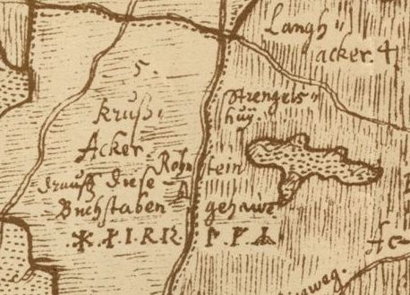
Über die Königliche Bibliothek in Kopenhagen ist diese Karte "Kort over Aabenraa Amt Die 3. SpecialCharte des Dorffs Haberschlvnd" aber auch abrufbar, wie ich gerade herausgefunden habe. Diese ist sogar optisch etwas ansprechender gegenüber der o.a. ausgeführt (Farbige Akzente). Dort ist dazu auch vermerkt: "Frei von Urheberrechten".
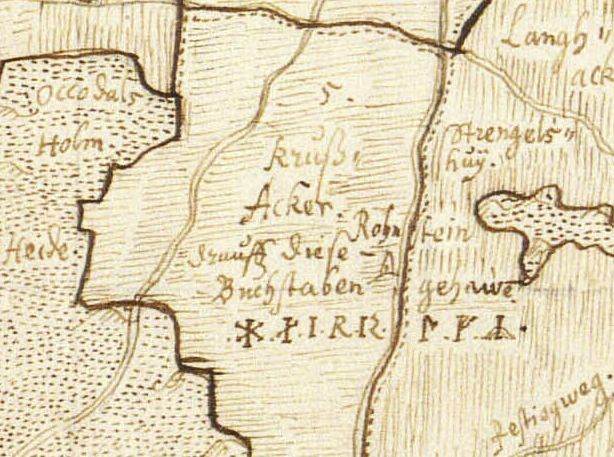
Außerdem findet sich noch die weitere Karte Kort over Aabenraa Amt Geometrische delineatio des Carspels Lugum, mit seinen 7. Dörffern - darin der Eintrag "Ronstein"
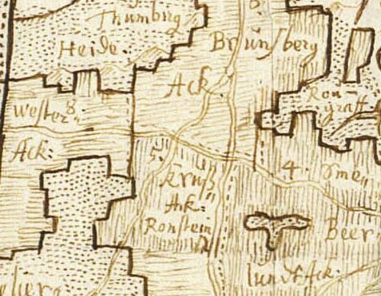
21.01.2022
Jütland - die (nochmalige) Überarbeitung der Webseite zu dem Runenstein in der Kirche von 71 Sporup habe ich heute online gestellt, nachdem ich ergänzende Informationen zu dem Beinamen "Svíðbalki" eingeholt / recherchiert habe. Dabei war mir freundlicherweise Frau Dr. Christiane Zimmermann, Akademieprojekt RuneS Institut für Skandinavistik, Frisistik und Allgemeine Sprachwissenschaft (ISFAS) der Christian-Albrechts-Universität Kiel, Christian-Albrechts-Platz 4, D-24098 Kiel, behilflich. Sie korrespondierte in der Frage mit Michael Lerche Nielsen, der die Einträge in die dänische Runendatenbank betreut.